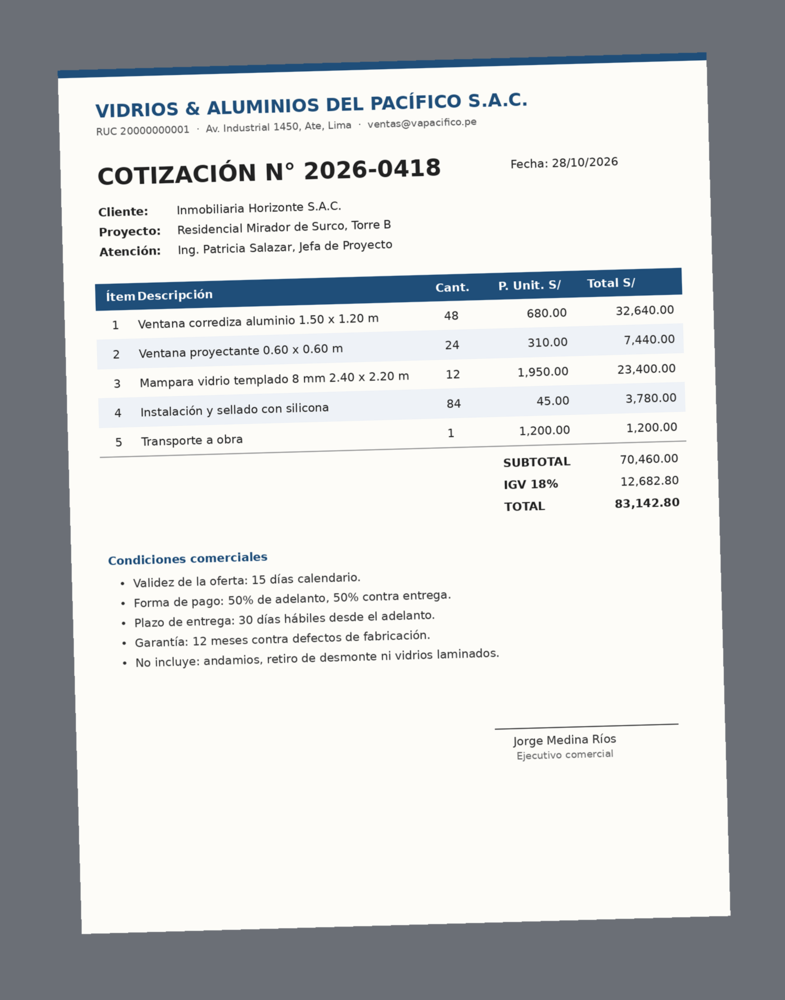

Haiku
El asistente veloz
El más rápido y económico. Brilla en tareas cortas, repetitivas y de mucho volumen.
Clasificar 300 reclamos de postventa por tema y urgencia.
Ocho misiones sobre los problemas reales de una inmobiliaria: evaluar un terreno, vender en preventa, controlar la obra, cumplir la entrega y atender la postventa. Cada misión te deja algo que funciona. Al terminarla, márcala y se encenderá un piso de la torre.
Haz clic en un piso para ir a su misión
Ten esto listo antes de la primera misión. Tus marcas se guardan en este navegador.
Una inmobiliaria no solo vende departamentos. Compra terrenos, tramita licencias, financia, construye, entrega, inscribe, atiende la postventa y, cada vez más, alquila. Estos son los problemas de hoy en cada etapa y dónde los vas a practicar. Desliza para ver las siete etapas.
Encontrar suelo que haga viable el proyecto.
El costo del suelo urbano habilitado es hoy la principal presión sobre la rentabilidad del sector. Gestión, con datos de CODIP
Misiones 1 y 8
Procesos lentos que encarecen el proyecto.
CODIP advierte trámites duplicados: ministerio, municipalidades y Fondo Mivivienda piden la misma información varias veces. Gestión
Misión 5
Vender rápido sin perder la confianza del comprador.
Más del 80% de las viviendas en Lima se compran en planos o en construcción. Las ventas crecieron 26% a septiembre de 2026. RPP · Forbes Perú
Misiones 2 y 8
Controlar insumos y avance para no comerse el margen.
Para compensar costos, los departamentos se achicaron: de 71.8 m² en 2022 a 63.7 m² en promedio a mayo de 2026. Gestión
Misiones 3 y 4
Cumplir el plazo prometido en preventa.
Indecopi ha ordenado a inmobiliarias pagar el alquiler de compradores por entregas tardías. Desde julio de 2026, Sunarp permite anotar proyectos desde la licencia. Gestión · El Peruano
Misiones 5, 6 y 7
Atender reclamos rápido antes de que escalen.
Cada reclamo mal atendido puede terminar en redes sociales o en una denuncia ante Indecopi. Clasificar y responder bien es la primera defensa.
Misiones 1 y 7
Un negocio que crece junto a la venta.
El alquiler promedio en Lima fue S/ 3,356 al mes en abril de 2026, con una rentabilidad bruta de 5.44%. Infobae, con datos de Urbania
Misiones 2 y 8
Claude es el asistente de IA Generativa de Anthropic. Tiene tres modelos con perfiles distintos, y elegir bien ahorra tiempo y límite de uso.
El asistente veloz
El más rápido y económico. Brilla en tareas cortas, repetitivas y de mucho volumen.
Clasificar 300 reclamos de postventa por tema y urgencia.
El analista senior
Equilibrio entre calidad y velocidad. Es el modelo para el trabajo de todos los días.
Responder a un propietario molesto con la política de garantías a la mano.
El socio experto
El más profundo. Para decisiones con varios supuestos, cálculos encadenados y criterio.
Evaluar si conviene comprar un terreno y qué preguntar antes de ofertar.
Elige una tarea y mira la recomendación.
La recomendación aparecerá aquí.
Regla práctica: empieza con Sonnet, sube a Opus si no basta y baja a Haiku si la tarea es repetitiva. Por encima existe Fable, el modelo tope de Anthropic, en planes de mayor nivel.
| Plan | Precio (USD, sin impuestos) | Lo principal |
|---|---|---|
| Free | Gratis | Sonnet y Haiku, uso limitado, hasta 5 proyectos |
| Pro | 20 al mes (17 con pago anual) | Opus, más uso, proyectos ilimitados, Research |
| Max | 100 al mes | 5 veces el uso de Pro, incluye Fable con límites |
| Ultra | 200 al mes | 10 veces el uso semanal de Pro |
| Team | 25 por persona (20 con pago anual) | De 2 a 150 personas, administración central, SSO, sin entrenamiento con tus datos por defecto |
| Enterprise | 20 por persona, anual, más el uso | Desde 20 personas, auditoría, control de retención de datos |
Fuente: claude.com/pricing, consultado en noviembre de 2026. El uso se mide en ventanas de 5 horas y límites semanales. Opus consume más límite por mensaje que Sonnet.
Imagina un practicante brillante que no conoce la empresa. Antes de empezar te preguntaría cinco cosas. Escríbelas aquí y mira cómo se arma tu prompt.
0 de 5 ingredientes
Empieza a escribir en los campos de la izquierda.
Ingrediente extra: uno o dos ejemplos de lo que esperas enseñan tu criterio mejor que un párrafo de instrucciones. Lo usarás en la misión 1.
Van de menor a mayor dificultad y recorren la cadena del negocio. La última une todo en un solo flujo: investigar, analizar, visualizar, presentar y defender una decisión.
Qué te llevas: criterio para elegir el modelo correcto según el encargo, probado con tus propios ojos.
Clasifica cada reclamo de postventa en una categoría (Humedad, Eléctrico, Sanitario, Carpintería, Acabados, Áreas comunes) y una urgencia (Alta, Media, Baja). Devuelve una tabla con N°, Departamento, Categoría y Urgencia. Al final, cuenta cuántos hay por categoría. Ejemplos de cómo clasifico: - "Sale agua por el tablero eléctrico" = Eléctrico, Alta - "Una mayólica del baño está rajada" = Acabados, Baja RECLAMOS: 1. Dpto 302: mancha de humedad en la pared del dormitorio. 2. Dpto 1104: el tomacorriente de la cocina echa chispas. 3. Dpto 507: la puerta del clóset no cierra. 4. Dpto 801: el inodoro pierde agua constantemente. 5. Dpto 213: el ascensor se detiene entre pisos. 6. Dpto 906: la pintura del techo se está descascarando. 7. Dpto 1201: no hay agua caliente en la ducha. 8. Dpto 405: la chapa de la puerta principal está trabada. 9. Dpto 610: se va la luz cada vez que uso la terma. 10. Dpto 1002: filtración en el techo del baño desde el piso de arriba. 11. Dpto 115: el portón del estacionamiento no abre con el control. 12. Dpto 708: el piso laminado se está levantando. 13. Dpto 1303: el desagüe del lavadero está atorado. 14. Dpto 222: las luces del pasadizo del piso 2 no encienden. 15. Dpto 517: la ventana de la sala no corre bien. 16. Dpto 903: hongos en la esquina de la terraza. 17. Dpto 1110: el intercomunicador no funciona. 18. Dpto 304: el zócalo del dormitorio se despegó. 19. Dpto 612: olor a desagüe en el baño de visitas. 20. Dpto 1405: la piscina de la azotea tiene el agua turbia. 21. Dpto 808: el interruptor del dormitorio está flojo. 22. Dpto 1007: la puerta del baño se hinchó y no cierra. 23. Dpto 401: gotea el caño de la cocina. 24. Dpto 1202: humedad y olor a moho detrás del ropero.
Actúa como jefe de postventa de una inmobiliaria. Responde este correo de un propietario molesto. CORREO: "Es la tercera vez que reporto la humedad en la pared del dormitorio del 1204 y nadie viene. Pagué S/ 590,000 por este departamento. Si esta semana no lo solucionan, voy a publicar todo en redes y presentar un reclamo ante Indecopi. Ernesto Salas" NUESTRA POLÍTICA: - Garantía de 1 año en acabados, 2 años en instalaciones y 10 años en estructura. - Visita técnica en un máximo de 72 horas desde el reclamo. - El departamento se entregó hace 7 meses. FORMATO: correo de máximo 150 palabras, con asunto, una disculpa concreta, la fecha y hora propuesta para la visita y un contacto directo. REGLAS: no prometas montos ni plazos de reparación que no estén en la política. No culpes al propietario.
Actúa como gerente de desarrollo inmobiliario. Nos ofrecen este terreno: - Ubicación: avenida principal en Santiago de Surco, Lima. - Área: 1,200 m², frente de 30 m. - Zonificación: residencial de densidad media. El vendedor dice que se pueden construir 8 pisos. - Precio pedido: US$ 2,880,000 (US$ 2,400 por m² de terreno). - Precio de venta esperado de los departamentos: US$ 2,300 por m² vendible. - Costo de construcción estimado: US$ 750 por m² construido. Necesito: 1) Una cabida estimada (m² construidos, m² vendibles, número de departamentos), con tus supuestos explícitos. 2) Un margen bruto aproximado y qué supuesto lo mueve más. 3) Los 5 riesgos principales. 4) Las 8 preguntas de due diligence que haría antes de ofertar. 5) Tu recomendación en 3 líneas: ¿ofertamos, negociamos o descartamos? Si un dato del vendedor debe verificarse, márcalo.
Qué te llevas: un simulador de crédito hipotecario que funciona y que el equipo comercial puede usar con sus clientes.
Crea un simulador interactivo de crédito hipotecario para que los asesores de ventas de una inmobiliaria en Lima lo usen con clientes que compran en preventa. Campos editables: - Precio del departamento en soles (por defecto S/ 440,000) - Cuota inicial en porcentaje (por defecto 10%) - Bono o subsidio en soles, opcional (por defecto 0), que se resta del monto a financiar - Tasa efectiva anual (por defecto 9.5%) - Plazo en años, con un deslizador de 5 a 25 (por defecto 20) Debe mostrar: - La cuota mensual en grande - El monto financiado y el total de intereses - Un gráfico de cómo se reparte cada cuota entre capital e intereses a lo largo del tiempo - Un botón para guardar el escenario y compararlo lado a lado con otro Diseño limpio y profesional, todo en español, montos en soles con separador de miles. Convierte la tasa efectiva anual a mensual con la fórmula correcta y muestra una nota que diga que es una simulación referencial.
Qué te llevas: un Excel descargable armado desde una foto, con fórmulas vivas y una hoja que verifica los números del proveedor.

Actúa como analista de compras de una inmobiliaria. A partir de la foto de esta cotización, crea un archivo Excel descargable con dos hojas: 1) "Partidas": Ítem, Descripción, Cantidad, Precio unitario y Total. El Total de cada fila, el Subtotal, el IGV de 18% y el Total final deben ser FÓRMULAS de Excel, no números escritos. 2) "Verificación": compara el subtotal, el IGV y el total que figuran en el documento con los que resultan de las fórmulas. Muestra la diferencia en soles y resalta en rojo cualquier fila donde no coincidan. Después del archivo, explícame en 3 líneas si la cotización está bien calculada.
Qué te llevas: un tablero interactivo del avance y los costos de una obra, listo para mostrar en un comité.
Actúa como analista de control de gestión de proyectos inmobiliarios. Con el Excel adjunto, crea un dashboard interactivo para el comité de proyecto. Calcula para cada partida el "valor ganado" (presupuesto por avance físico) y compáralo con lo ejecutado. El dashboard debe tener: - Arriba, 4 indicadores: presupuesto total, ejecutado a la fecha, porcentaje ejecutado y desviación contra valor ganado. - Un gráfico de barras por partida: presupuesto, ejecutado y valor ganado. - Un gráfico de líneas mensual: programado contra real. - Un semáforo por partida: verde si el gasto va acorde al avance, ámbar si se excede hasta 5%, rojo si se excede más de 5%. Reglas: distingue un adelanto a proveedor de un sobrecosto, y explícalo con una nota. Calcula con los datos del archivo, no estimes. Montos en soles.
Mientras tanto, piensa en una tarea repetitiva de tu semana que le encargarías a Claude.
Qué te llevas: pasar de “búscame info” a una investigación profesional, con cada afirmación conectada a su fuente.
Desde julio de 2026, un proyecto puede anotarse en Sunarp con la licencia aprobada[1]. Indecopi ha ordenado pagar el alquiler a compradores por entregas tardías[2].
Fuentes
Actúa como analista legal y regulatorio de una inmobiliaria peruana. Busca en la web y responde: 1) ¿Qué cambió en 2026 en Sunarp para inscribir o anotar proyectos inmobiliarios y qué significa para una inmobiliaria que vende en preventa? 2) ¿Qué ha resuelto Indecopi cuando una inmobiliaria entrega tarde un departamento vendido en planos? Incluye ejemplos de medidas ordenadas. 3) ¿Qué propuestas existen para reducir los plazos de las licencias de edificación? Formato: - Un resumen de 5 líneas al inicio. - Una sección por pregunta. - Cada afirmación con un número entre corchetes, por ejemplo [1]. - Al final, una sección "Fuentes" numerada con: título, medio o entidad, fecha de publicación y enlace. Reglas: - Prioriza normas oficiales (El Peruano, Sunarp, Indecopi, Ministerio de Vivienda) y medios especializados. - No afirmes nada que no esté en una fuente. Si no encuentras algo, escribe "Sin fuente confiable".
Revisa tu respuesta como lo haría un auditor exigente. Arma una tabla con: N° de afirmación, Afirmación, Fuente citada, ¿La fuente lo dice textualmente? (Sí, Parcial o No) y Fecha de la fuente. Corrige o retira lo que no puedas confirmar.
Qué te llevas: un análisis de contrato donde cada riesgo cita su cláusula y cada criterio externo cita su fuente, más una propuesta de cambios en Word.
<rol> Eres abogado especialista en derecho inmobiliario y protección al consumidor en Perú. Asesoras a LA COMPRADORA del contrato adjunto. </rol> <contexto> Es un contrato de compraventa de un departamento en preventa. La compradora está preocupada porque la obra va atrasada. </contexto> <tarea> 1. Resume en 5 viñetas: partes, precio, forma de pago, plazo de entrega y penalidades. 2. Arma una tabla de riesgos con: Cláusula (número), Cita textual (máximo 20 palabras), Riesgo para la compradora, Gravedad (Alta, Media o Baja) y Propuesta de cambio. 3. Busca en la web cómo ha resuelto Indecopi casos de entrega tardía de departamentos y explica cómo se relacionan con las cláusulas de entrega, fuerza mayor y penalidad. 4. Propón los 3 cambios que negociarías primero. </tarea> <reglas> - Toda afirmación sobre el contrato lleva su cita textual y su número de cláusula. - Toda afirmación sobre Indecopi lleva un número entre corchetes y, al final, una sección "Fuentes" con título, medio, fecha y enlace. - Si algo no figura en el contrato, escribe "No figura en el contrato". - Antes de responder, revisa la coherencia interna del contrato: fechas, plazos y montos. - Al terminar, relee tu tabla y elimina lo que no puedas respaldar. </reglas>
Qué te llevas: un sparring para practicar conversaciones difíciles, que además te evalúa con una rúbrica y te da consejos.
Vamos a hacer un ensayo. Actúa como Rosa Medina, la compradora del contrato adjunto. Le prometieron la entrega del departamento 802 para julio y ya van 4 meses de retraso. Está pagando alquiler mientras espera, leyó su contrato y sabe que Indecopi ha ordenado a otras inmobiliarias pagar el alquiler de compradores afectados. Yo soy el representante de la inmobiliaria. Reglas del personaje: - Responde en 2 o 3 líneas, como hablaría una persona real. - Si respondo con excusas o me escudo en cláusulas del contrato, sube el tono. - Si ofrezco soluciones concretas, con fechas y compensaciones posibles, baja el tono poco a poco. - No salgas del personaje hasta que yo escriba FIN. Cuando escriba FIN, sal del personaje y evalúame en una tabla del 1 al 5 en: Empatía, Claridad, Solución concreta, Tono profesional y Manejo de objeciones. Para cada criterio cita una frase mía como evidencia. Termina con el riesgo legal o reputacional que dejé abierto y el consejo más importante para mejorar. Empieza tú, con el primer mensaje de Rosa.
El caso: el comité de inversiones debe elegir dónde lanzar el próximo proyecto. Hay tres terrenos en evaluación: Jesús María, Ate y Chorrillos. Vas a hacer el trabajo de un analista completo en un solo chat: investigar el mercado, analizar los terrenos, visualizar, presentar y defender tu recomendación ante un directorio exigente.
Por qué en un solo chat: cada etapa usa lo que produjo la anterior. No tendrás que volver a explicar nada.
Abre un chat nuevo con Opus y activa la búsqueda web. Si tienes tiempo, usa Research para un informe más profundo.
Actúa como analista de inteligencia de mercado inmobiliario en Lima. Vamos a evaluar dónde lanzar un proyecto de vivienda. Investiga en la web, con la información más reciente de 2026, para Jesús María, Ate y Chorrillos: - Precio promedio por m² de departamentos nuevos (indica moneda) - Ticket o precio promedio por unidad - Velocidad de venta o absorción de la zona - Alquiler promedio y rentabilidad bruta - Tendencias de demanda: metrajes, número de dormitorios, peso de la vivienda social Entrega una tabla por distrito. Cada dato con un número de fuente entre corchetes. Al final, una sección "Fuentes" con título, medio o entidad, fecha y enlace. Si no encuentras un dato para un distrito, escribe "Sin fuente confiable" y no lo estimes.
En el mismo chat, adjunta terrenos_candidatos.xlsx y envía el prompt.
Ahora actúa como gerente de desarrollo inmobiliario. Adjunto el Excel con los 3 terrenos y nuestros supuestos internos. Para cada terreno calcula, usando los precios de mercado que investigaste y los supuestos del Excel: 1) Cabida: m² construidos, m² vendibles y número estimado de departamentos. 2) Ingresos estimados, costo total (terreno más construcción) y margen bruto. 3) Una sensibilidad: ¿qué pasa con el margen si el precio de venta baja 10%? Luego arma una matriz de evaluación ponderada con: Margen (30%), Demanda de la zona (25%), Riesgos del terreno (20%), Velocidad de venta (15%) y Potencial de alquiler (10%). Puntúa del 1 al 5 y explica cada puntaje en una línea. Reglas: calcula con los datos del archivo, muestra tus supuestos en una tabla y marca como "Verificar" todo dato del vendedor que deba confirmarse.
Convierte el análisis en un tablero que el comité pueda explorar.
Crea un dashboard interactivo para el comité de inversiones con: - Una tarjeta por terreno con margen, número de departamentos y puntaje total. - Un gráfico de barras que compare ingresos, costo y margen de los 3 terrenos. - La matriz de evaluación con colores por puntaje. - Un deslizador que cambie el precio de venta entre -15% y +10% y actualice los márgenes. Usa solo los números de nuestro análisis.
Pasa del tablero a una presentación que puedas llevar al comité.
Con todo lo anterior, crea una presentación en PowerPoint descargable de 6 slides para el comité de inversiones: 1. La decisión que pedimos, en una frase. 2. El mercado: lo que dicen los datos por distrito, con sus fuentes al pie. 3. Los 3 terrenos comparados. 4. La matriz de evaluación y el ganador. 5. Riesgos del terreno recomendado y cómo mitigarlos. 6. Próximos pasos y qué necesitamos aprobar hoy. Estilo sobrio, una idea por slide, máximo 35 palabras por slide, y notas del orador en cada una.
Claude se convierte en el directorio. Responde sus preguntas como lo harías en la sala.
Ahora actúa como el directorio de la empresa: exigente, con experiencia en el sector y escéptico. Hazme 5 preguntas difíciles sobre mi recomendación, una por una, basadas en los puntos débiles de nuestro análisis. Espera mi respuesta antes de pasar a la siguiente. Cuando termine la quinta, sal del rol y evalúa mi defensa: qué respuestas convencieron, cuáles no y qué dato o análisis debería traer al comité real.
Seis preguntas para comprobar lo aprendido. Al responder verás si acertaste y por qué. Si apruebas, se ilumina la azotea.
Copia la que te sirva, completa los corchetes y úsala en tu cuenta de trabajo. Todas siguen la receta del prompt.